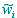

Freeman General Centrality
Every time a centrality index is computed at node-level, Agna generates a general index computed using Freeman's General Centrality formula, as a network-level aggregate of that index.
Specifically, this index is produced for the following centrality measures: Bavelas-Leavitt, Closeness, Fareness and Betweenness.
If there are g values of a specific centrality index w, Freeman's General Centrality is computed as follows:
where
 denotes
the maximum in a set of g values and
denotes
the maximum in a set of g values and
See also: